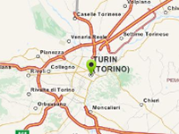

Example of scaling markers when changing zoom.
Usage instructions:
Add this script to map GameObject.
Add this script to map GameObject.
MarkerScaleByZoomExample.cs
/* INFINITY CODE 2013-2016 */
/* http://www.infinity-code.com */
using UnityEngine;
namespace InfinityCode.OnlineMapsExamples
{
[AddComponentMenu("Infinity Code/Online Maps/Examples (API Usage)/MarkerScaleByZoomExample")]
public class MarkerScaleByZoomExample : MonoBehaviour
{
/// <summary>
/// Zoom, when the scale = 1.
/// </summary>
public int defaultZoom = 15;
/// <summary>
/// Instance of marker.
/// </summary>
private OnlineMapsMarkerBase marker;
/// <summary>
/// Init.
/// </summary>
private void Start()
{
// Create a new marker.
marker = OnlineMaps.instance.AddMarker(new Vector2(15, 15));
// Subscribe to change zoom.
OnlineMaps.instance.OnChangeZoom += OnChangeZoom;
// Initial rescale marker.
OnChangeZoom();
}
/// <summary>
/// On change zoom.
/// </summary>
private void OnChangeZoom()
{
float originalScale = 1 << defaultZoom;
float currentScale = 1 << OnlineMaps.instance.zoom;
marker.scale = currentScale / originalScale;
}
}
}